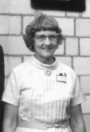

Please note: the AAS Obituaries are temporarily being hosted on this website while their full content is being ingested into the PubPub publishing platform newly adopted by the Bulletin of the American Astronomical Society. When the migration is complete, your existing links will take you to the final, migrated content. Contact peter.williams@aas.org with any questions.
Jeannette Virginia Lincoln (1915-2003)
J. (Jeannette) Virginia Lincoln died on 1 August 2003 of natural causes at age 87. She was a pioneer in space weather forecasting and was instrumental in establishing the World Data Center-A for Solar-Terrestrial Physics (WDC-A for STP) at the National Oceanic and Atmospheric Administration's (NOAA) National Geophysical Data Center (NGDC). Lincoln received a U.S. Department of Commerce Gold Medal for Distinguished Service in 1973 for outstanding accomplishments and leadership. She was elected a Fellow of the American Geophysical Union, a Fellow of the American Association for the Advancement of Science, and a Fellow of the Society of Women Engineers. A physicist, she served as Division Chief of the Solar-Terrestrial Physics Division (STPD) and Director of WDC-A for STP from 1966 until her retirement in 1980.
Virginia was born on Labor Day, 7 September 1915, in Ames, Iowa, to Rush B. Lincoln and Jeannette Bartholomew Lincoln. Her father, Rush B. Lincoln (b. 1881, d. 1977 at age 95), served as a Major General in the U.S. Air Force. He was a direct descendant of the brother of President Abraham Lincoln. Her mother Jeannette Bartholomew Lincoln (d. 1986 at age 104) taught Chemistry at Iowa State University. Her brother, Rush B. Lincoln, Jr. (d. 2002), was five years older. Her grandfather Lincoln fought in the Civil War as a Confederate Captain. Virginia was immersed in military life and continued many contacts and visited military installations throughout her life. Her parents lived with her until their deaths. She enjoyed the perks of being a General's daughter, actively participating in her parent's lives, and served as caregiver in their declining years. Influenced by her Army background, she developed a strong assertive personality and good problem-solving capabilities.
She received a bachelor's degree in physics from Wellesley College in 1936 and a master's degree from Iowa State University in 1938. She was an instructor in household equipment at Iowa State from 1936 to 1942. Electric appliances were new-fangled devices and people had to be educated in their use.
In 1942, Virginia joined the U.S. National Bureau of Standards in Washington, DC, as a physicist in the Interservice Radio Propagation Laboratory (IRPL), working in ionospheric research. In 1946 the Central Radio Propagation Laboratory (CRPL) was formed to centralize research and provide predictions in the field of radio propagation, including investigating solar and geophysical effects and ionospheric data. In 1954 CRPL moved to Boulder, Colorado. Her first job was preparing monthly ionospheric prediction contour maps as a radio weather forecaster. The predictions were used in selecting frequencies for long distance communications. Alan H. Shapley, Department of Terrestrial Magnetism, had contracts with solar observatories to obtain their data, and worked with Lincoln on forecasts. In 1949, Virginia helped create a statistical method for predicting sunspot activity that is still used today in forecasting solar storms that can disrupt radio communication on Earth.
Taking on administrative responsibilities, Virginia was appointed Chief of Radio Warning Services in 1959, the first woman to head a section in the federal bureau. Also in 1959, Lincoln was the only woman in the official U.S. delegation of over 50 scientists to attend a meeting of the International Geophysical Year (IGY) in the former Soviet Union. Using her Russian slides, Virginia gave many talks about the IGY to groups including the Chemical Society banquet, educational associations and women's service clubs. She was part of weekly meetings with Walt Roberts and the High Altitude Observatory (HAO) staff, discussing solar-terrestrial relationships. They developed auroral and cosmic ray indices for the Calendar Records (graphical display of indices and outstanding solar-terrestrial events each day) of the IGY.
In 1966 she gave up forecasting work to devote time to data center work, serving as Director of the WDC-A for STP and the STP Division Chief for NOAA NGDC. She was passionate about the World Data Center system and maintaining data archives for future generations. She would introduce herself as "I am the World Data Center for Solar-Terrestrial Physics." Attending many foreign and U.S. meetings, she constantly searched for new data sets to add to the STP collection.
She retired in 1980 after 38 years of federal service. When she was inducted into the Colorado Women's Hall of Fame in March 2000, she said: "My work with the World Data Centers introduced me to colleagues worldwide that became a source of much enjoyment, seeing them periodically at the international scientific meetings in Europe, Asia, and Australia."
She was a past chair of the Denver Section of the Society of Women Engineers and very active in encouraging girls to study math and science. A member of the Association of Federal Professional and Administrative Women (AFPAW) and the Federally Employed Women (FEW), she supported improving the status of women.
Virginia categorized herself as a joiner. She was active in many organizations, achieving life membership in the American Association of University Women (AAUW) and the Young Women's Christian Association (YWCA). In her younger days she was a figure skater and she enjoyed square dancing, playing golf, and traveling. She also enjoyed the arts and held season tickets to the University of Colorado Artist Series, the Denver Center for the Performing Arts, the opera, and the Colorado Music Festival.
She was preceded in death by her parents and her brother Rush. Survivors include a nephew, Rush B. Lincoln III, a niece Deborah Lincoln Niekras, four great nieces and a great nephew. Her memoirs, "My Busy Life: How I Never Stopped Enjoying It" by Jeanette Virginia Lincoln, are available at the Carnegie Library in Boulder, Colorado. Also available are her history of her father "Rush Blodget Lincoln, My Father - the General" and a history of her mother's family. Lincoln's legacy in the World Data Center system continues to this day.
Obituary written by: Helen E. Coffey (NOAA National Geophysical Data Center)
BAAS Citation: BAAS, 2004, 36, 1678
SAO/NASA ADS Bibcode: 2004BAAS...36.1679C